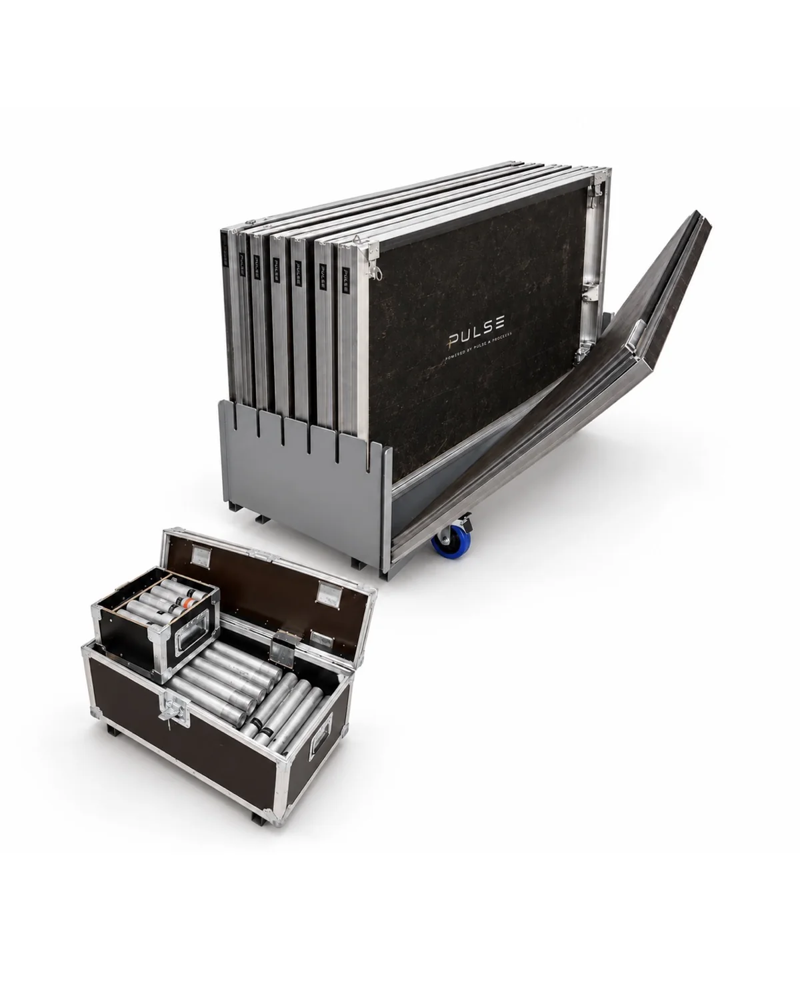

Extra
Praticable 2 x 1 m
Modules professionnels pour créer une scène, un podium ou une plateforme DJ. 6 unités disponibles.
40 €Les praticables et accessoires permettent de créer un espace propre, surélevé et mieux organisé pour la régie, le DJ ou l’animation.

Modules professionnels pour créer une scène, un podium ou une plateforme DJ. 6 unités disponibles.
40 €Pieds disponibles en 20, 40, 60 et 80 cm, avec pieds réglables 90-140 cm.
2,50 €Accès scène pour hauteurs 40, 60 ou 80 cm avec main courante latérale.
20 €Les équipements peuvent être réservés seuls ou intégrés dans une prestation complète avec installation.
Demander une configuration